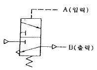
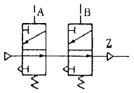
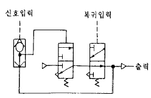
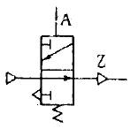
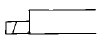
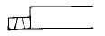
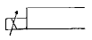
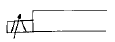
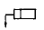
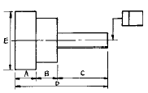

기계가공기능장 (2002-04-07 기출문제)
1과목: 임의 구분
1. 유압펌프의 종류가 아닌 것은?
- 밸브 펌프
- 기어 펌프
- 베인 펌프
- 플런저 펌프
(정답률: 57%)

2. 다음 중 공기압을 기계적 일로 바꾸는 부분은?
- 공기압 소음기
- 공기압 필터
- 공기압용 배관
- 공기압 실린더
(정답률: 90%)
3. 대기압을 0 으로 하여 측정한 압력은?
- 표준압력
- 양정압력
- 절대압력
- 게이지압력
(정답률: 80%)
4. 다음의 그림은 공유합 회로도이다. 이중 플립플롭(Flip-Flop)회로는?




(정답률: 43%)
5. 복동 가변식 전자 액추에이터의 기호는?




(정답률: 61%)
6. 치수관리 요령으로서 가장 부적합한 것은?
- 공차누적방지
- 공작물의 치수변화에 따른 치수공차 초과방지
- 공작물의 휨방지
- 공작물의 중심선관리
(정답률: 72%)
7. 다음 클램프의 종류에 포함되지 않는 것은?
- 스트랩 클램프(strap clamp)
- 베어링 클램프(bearing clamp)
- 나사 클램프(screw clamp)
- 캠 클램프(cam clamp)
(정답률: 66%)
8. 다음 가공물의 체결기구에 있어서 틀린 것은?
- 반드시 죔쇠가 있는 방향에 절삭력이 작용하지 않도록 설계한다.
- 절삭면은 되도록 테이블에 멀도록 한다.
- 정밀다듬질한 면은 연질의 재료로 체결한다.
- 체결력이 가공면에 변형을 주는 일이 없도록 한다.
(정답률: 79%)
9. 다음 지그 및 보링바에 대한 설명 중 틀린 것은?
- 지그에는 보통 3개의 다리를 붙인다.
- 한 방향에서 구멍을 뚫을 수 있는 지그를 평지그라한다.
- 보링바의 지름에 대하여 안전하게 보링할 수 있는 깊이는 1:4 이다.
- 지그는 경제적인 견지에서 검토되어야 한다.
(정답률: 74%)
10. 다음은 드릴작업시 지그를 사용할 경우의 장점을 설명한 것이다. 잘못 설명한 것은?
- 제품의 정밀도가 향상된다.
- 금긋기가 필요없다.
- 숙련공이 있어야 한다.
- 호환성이 좋아진다.
(정답률: 84%)
11. 다음 도면에서

이 뜻하는 것으로 바른 것은?
- A부분의 형상정도를 나타낸다.
- C부분의 형상정도를 나타낸다.
- D부분의 형상정도를 나타낸다.
- E부분의 형상정도를 나타낸다.
(정답률: 57%)
12. 측정기선택시 고려해야할 사항 중 거리가 가장 먼 것은?
- 제품수량
- 측정범위
- 제품공차
- 측정시간
(정답률: 61%)
13. 평면도(平面度)란 평면부분의 이상평면에 대하여 어긋남의 크기를 말한다. 여기서 이상평면이란?
- 실제 제품 중 가장 평면도가 좋은 면을 말한다.
- 평면부분 중 3점을 포함하는 기하학적 평면을 말한다
- 측정할 때 사용한 정반면을 말한다.
- 평면부분중 4점을 포함하여 만들어진 면을 말한다.
(정답률: 59%)
14. 다음 각도 측정기 중에서 원주눈금원판(Circular table)의 검교정에 주로 사용되는 측정기는?
- 폴리곤(Polygon)
- 펜타프리즘(Penta prism)
- 각도 측정기
- 요한슨식(Johansson type) 각도게이지
(정답률: 41%)
15. 다음 측정기들 중 아베의 원리(Abbe's Principle)에 맞는 구조를 갖고 있는 측정기는?
- 버어니어 캘리퍼스
- 외측 마이크로 미터
- 하이트 게이지
- 지렛대식 다이얼 게이지
(정답률: 81%)
16. 다음 중 래스터 스캔형 디스플레이의 특징이 아닌 것은?
- 칼라표현이 가능하다.
- 가격이 랜덤 스캔형 보다 저렴하다.
- 표시 속도가 랜덤 스캔형 보다 약간 느리다.
- 표시할 수 있는 도형의 양에 제한이 있다.
(정답률: 45%)
17. 자료표현의 최소단위로서 컴퓨터의 표현수인 0또는 1을 나타내는 정보의 단위는?
- byte
- bit
- word
- record
(정답률: 80%)
18. CNC와이어 컷 방전가공에서 좋은 파형을 만들기 위한 방법이 아닌 것은?
- 충전회로는 트랜지스터식 스위칭 회로를 사용하는 것이 적당하다.
- 방전회로는 콘덴서식이 좋다.
- 극성은 정극성이어야 한다.
- 진동폭이 좁고 전류 파고값이 낮아야 한다.
(정답률: 65%)
19. BCD(Binary Coded Decimal)코드 체계에서 표현할 수 있는 문자의 수는?
- 256개
- 64개
- 128개
- 42개
(정답률: 43%)
20. 다음 중 휴지(Dwell)시간 지정을 의미하는 어드레스가 아닌 것은?
- P
- R
- U
- X
(정답률: 88%)
2과목: 임의 구분
21. 시퀀스 제어회로 설계에서 시퀀스 접속도의 적절한 설명이 아닌 것은?
- 기구, 전원 등의 배치가 생략되어 있다.
- 기구의 형상, 구조가 생략되어 있다.
- 제어하는 에너지 전기, 유압, 공기압 등이 공급되어 있다.
- 조작하는 힘이 가해져 있지 않은 상태를 나타낸다.
(정답률: 48%)
22. 자동화 설비의 신뢰성을 나타내는 척도가 아닌 것은?
- 신뢰도
- 평균고장 간격시간
- 평균가동시간
- 고장률
(정답률: 26%)
23. 오차입력 신호의 적산치에 비례하여 조작변수를 변화시키는 제어방식은?
- on-off제어
- 비례제어
- 미분제어
- 적분제어
(정답률: 46%)
24. 고주파 발진형 근접스위치가 검출할 수 있는 것은?
- 알루미늄
- 플라스틱
- 종이
- 나무
(정답률: 76%)
25. 탄뎀형 실린더에 대한 설명 중 가장 옳은 것은?
- 2개의 복동실린더를 1개의 실린더 형태로 조립해 놓은 실린더
- 긴 행정을 만들기 위해 다단 튜브형 로드를 가진실린더
- 복수의 실린더를 직렬하여 몇 군데의 위치를 선정할 수 있는 실린더.
- 임의의 입력신호에 대해 일정한 함수가 되도록 위치 결정할 수 있는 실린더
(정답률: 73%)
26. 일반적으로 박스 지그(Box Jig)는 어떤 작업에 사용하는가?
- 선반 작업에서 크랭크축 절삭을 할때
- 그라인딩에서 테이퍼 작업을 할때
- 드릴링 작업에서 복잡한 가공물에 구멍을 뚫을 때
- 드릴링에서 플랜지와 같은 평면에 많은구멍을 뚫을때
(정답률: 48%)
27. 지그 보오링 머시인에는 정밀측정 기구가 사용된다. 여기서 사용되는 측정 기구가 아닌 것은?
- 현미경을 사용한 광학적 장치
- 표준봉 게이지와 다이얼 게이지
- 측장기
- 전기적 계측장치
(정답률: 27%)
28. 블록게이지(Block gauge)를 제작하려 한다. 최종 다듬질은 어떤 가공을 하는가?
- 방전가공
- 래핑
- 수퍼피니싱
- 액체호닝
(정답률: 76%)
29. 잇수 N=50 이며, 모듈 M=2.5인 평치차를 가공하려고 할 때 소재의 직경 D는 몇 mm가 되는가?
- D = 115
- D = 120
- D = 125
- D = 130
(정답률: 31%)
30. 연삭 작업에서 연삭조건이 좋더라도 숫돌 바퀴의 질이 균일치 못하거나 공작물의 영향을 받아 숫돌모양이 나쁠때 일정한 모양으로 고치는 방법은?
- 로딩(Loading)
- 글레징(glazing)
- 트라잉(trying)
- 트루잉(truing)
(정답률: 74%)
31. 센터리스 연삭기에서 조정숫돌차의 바깥지름이 400(mm), 회전수가 30(rpm), 경사각이 4° 일 때 1분간의 이송 속도는?
- 2.63(m/min)
- 8.85(m/min)
- 4.58(m/min)
- 6.85(m/min)
(정답률: 22%)
32. 공구의 지름 50mm, 주축의 회전수 120rpm, 절삭날의 갯수 12개의 플레인 밀링커터로 절삭할 때 날 1개당의 이송이 0.1mm이면 매분 이송은 몇 mm가 되는가?
- 720
- 600
- 188.5
- 144
(정답률: 58%)
33. 원주를 단식 분할법으로 13등분 하였다면, 어디에 해당 하는가?
- 13구멍열에서 1회전에 3구멍씩 이동한다.
- 39구멍열에서 3회전에 3구멍씩 이동한다.
- 40구멍열에서 1회전에 13구멍씩 이동한다.
- 40구멍열에서 3회전에 13구멍씩 이동한다.
(정답률: 48%)
34. 선반에서 지름이 작고 길이가 긴 공작물을 절삭할 때 왕복대에 설치하여 공작물의 떨림을 방지하는 부속장치는?
- 이동식 방진구
- 조립식 맨드릴
- 모방절삭 장치
- 마그네틱 척
(정답률: 78%)
35. 선반의 스윙에 관한 설명 중 옳은 것은?
- 양센터 사이의 거리
- 베드면에서 부터 주축 중심까지의 거리
- 깎을수 있는 공작물의 최대길이
- 깎을수 있는 공작물의 최대지름
(정답률: 46%)
36. 절삭공구 재료로 사용하는 스텔라이트의 주성분은?
- W - C - Co - Cr
- W - C - Cu - Ni
- Co - Mo - C - Mn
- Co - C - W - Cu
(정답률: 52%)
37. 초경합금 공구의 수명판정법으로 가장 많이 사용되는 것은?
- 가공면에 광택이 있는 무늬나 점들이 생길 때
- 공구날의 마모가 일정량에 도달하였을 때
- 절삭저항의 주분력이 갑자기 증가할 때
- 완성치수가 일정량으로 변화하였을 때
(정답률: 60%)
38. 절삭제의 사용목적이 아닌 것은?
- 냉각작용
- 공구와 칩의 친화력 촉진작용
- 윤활작용
- 칩제거 작용
(정답률: 75%)
39. 절삭유를 사용하여 공구 경사면의 마찰을 감소시켰을 때 일어나는 현상이 아닌 것은?
- 전단각이 증가한다
- 표면 거칠기가 향상 된다
- 칩의 두께가 감소한다
- 절삭 저항이 약간 증가한다
(정답률: 75%)
40. 기계의 진동발생이 적고 가공표면이 깨끗하고 정밀공작에 적당한 칩의 형태는?
- 유동형 칩
- 전단형 칩
- 균열형 칩
- 열단형 칩
(정답률: 79%)
3과목: 임의 구분
41. 절삭속도와 결과적인 가공면의 표면 거칠기와의 사이의 관계를 가장 옳게 표현한 것은?
- 절삭속도의 증가에 따라 표면 거칠기도 증가한다
- 절삭속도의 증가에 따라 표면 거칠기는 감소한다
- 절삭속도의 증가에 따라 표면 거칠기는 처음 증가하였다가 차츰 감소된다
- 절삭속도와 표면 거칠기와는 아무 관련이 없다
(정답률: 45%)
42. 다음 3분력 중 주분력을 가장 바르게 설명한 것은?
- 절삭 깊이에 반대 방향으로 작용하는 힘을 주분력이 라 한다
- 공구의 절삭 방향과 반대 방향으로 작용하는 힘을 말한다
- 절삭 작업에 있어 배분력과 횡분력을 모두 합한 절삭력을 말한다
- 공구의 이송 방향과 반대로 작용하는 것을 말하며 이분력이 가장 크다
(정답률: 39%)
43. 공작물과 같은 치수비로 제작된 모델에 따라 제품을 절삭하는 것은?
- 정면절삭
- 테이퍼절삭
- 모방절삭
- 외경절삭
(정답률: 79%)
44. 테이블(table)이 수평면 내에서 회전하는 것으로서, 공구의 길이방향 이송이 수직방향으로 되어 있으며, 대형이고 중량물의 일감을 깎는데 쓰이는 선반(lathe)은?
- 차륜(wheel)선반
- 공구(tool room)선반
- 정면(face)선반
- 직립(vertical)선반
(정답률: 57%)
45. 공작기계 주철 베드의 표면을 경화시키는데 가장 효과적인 방법은?
- 염욕법
- 청화법
- 고주파 경화 처리법
- 머플로법
(정답률: 72%)
46. 프레스의 작업시작전 점검사항으로 가장 중요한 것은?
- 기계의 공유 유무를 확인한다.
- 전원의 단전 유무를 확인한다.
- 클러치 상태를 점검한다.
- 상하 형틀의 클리어런스를 점검한다.
(정답률: 70%)
47. 드릴 작업시의 행동내용 중 불안전한 행동이 아닌 것은?
- 절삭 중에 브러시로 칩을 털어낸다.
- 드릴을 회전시키고 테이블을 조정한다.
- 장갑을 끼고 작업한다.
- 작은구멍을 뚫고 큰 구멍을 다시 뚫는다.
(정답률: 89%)
48. 다음 중 소성가공에 속하는 것은?
- 주조
- 소결
- 인발
- 선삭
(정답률: 53%)
49. 탄소강의 불순물 중에서 강도, 연신율, 충격치를 모두 감소시키고 특히 고온에서 적열취성(red shortness)을 일으키는 원소는?
- S
- Cu
- C
- Mn
(정답률: 77%)
50. 탄소강에서 일반적으로 탄소함유량이 많아지면, 그 성질이 감소하는 기계적 성질은?
- 경도
- 인장강도
- 충격치
- 항복점
(정답률: 50%)
51. 표점거리 50mm, 직경 ø14mm인 인장시편을 시험한 후 시편을 측정한 결과 길이는 늘어나고 직경은 ø12mm였다. 이 재료의 단면수축율은 몇 %인가?
- 13.5
- 20.5
- 26.5
- 36.1
(정답률: 58%)
52. 내식성이 우수한 알루미늄 합금의 종류가 아닌 것은?
- 하이드로날리움(Hydronalium)
- 알민(Almin)
- 실루민(Silumin)
- 알드리(Aldrey)
(정답률: 61%)
53. 큰 하중에 견디는 동시에 바닥은 인성이 있어서 축과 잘어울리고 충격과 진동에도 잘 견디며, 비열이 작고 열전도가 커서 고속도 대하중의 기계용으로 가장 적합한 베어링 합금은?
- Sn + Sb + Cu
- Pb + Sb + Sn
- Zn + Cu + Sn + Pb
- Al + Sn + Cu + Ni
(정답률: 27%)
54. 내화재가 갖추어야 할 조건이 아닌 것은?
- 화학적 부식에 강할 것.
- 기계적 강도가 클 것.
- 열전도가 좋을 것.
- 스폴링(spalling)이 없을 것.
(정답률: 71%)
55. 도수분포표에서 도수가 최대인 곳의 대표치를 말하는 것은?
- 중위수
- 비 대칭도
- 모우드(mode)
- 첨도
(정답률: 58%)
56. 일정통제를 할 때 1일당 그 작업을 단축하는데 소요되는 비용의 증가를 의미하는 것은?
- 비용구배(Cost slope)
- 정상 소요시간(Normal duration)
- 비용견적(Cost estimation)
- 총비용(Total cost)
(정답률: 74%)
57. 서블릭(therblig)기호는 어떤 분석에 주로 이용되는가?
- 연합작업분석
- 공정분석
- 동작분석
- 작업분석
(정답률: 34%)
58. 관리도에서 점이 관리한계내에 있고 중심선 한쪽에 연속해서 나타나는 점을 무엇이라 하는가?
- 경향
- 주기
- 런
- 산포
(정답률: 46%)
59. 모집단의 참값과 측정 데이터의 차를 무엇이라 하는가?
- 오차
- 신뢰성
- 정밀도
- 정확도
(정답률: 57%)
60. 준비작업시간이 5분, 정미작업시간이 20분, lot수 5, 주작업에 대한 여유율이 0.2라면 가공시간은?
- 150분
- 145분
- 125분
- 1⑤분
(정답률: 43%)